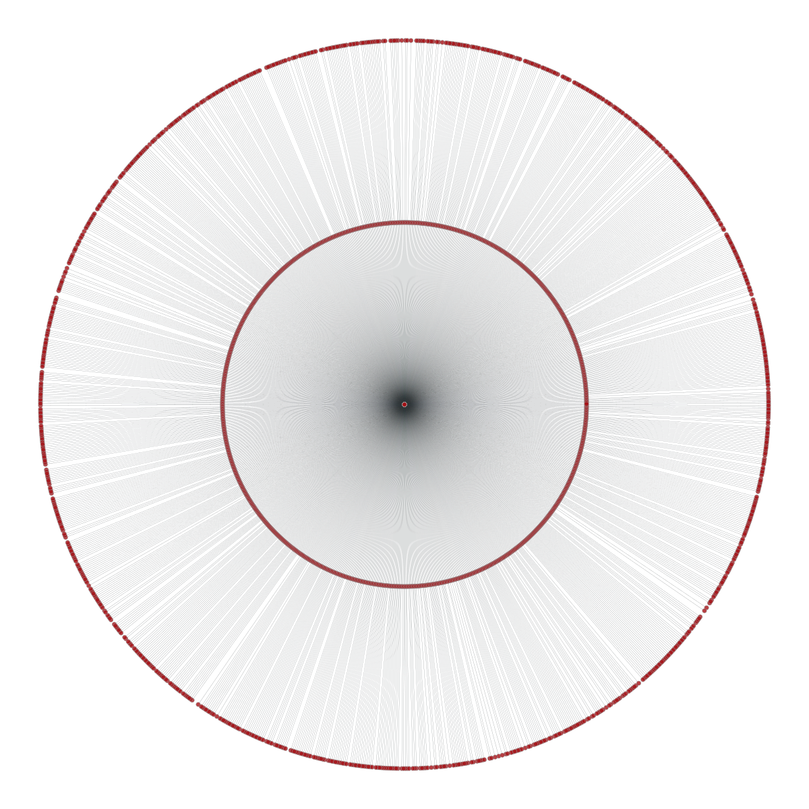
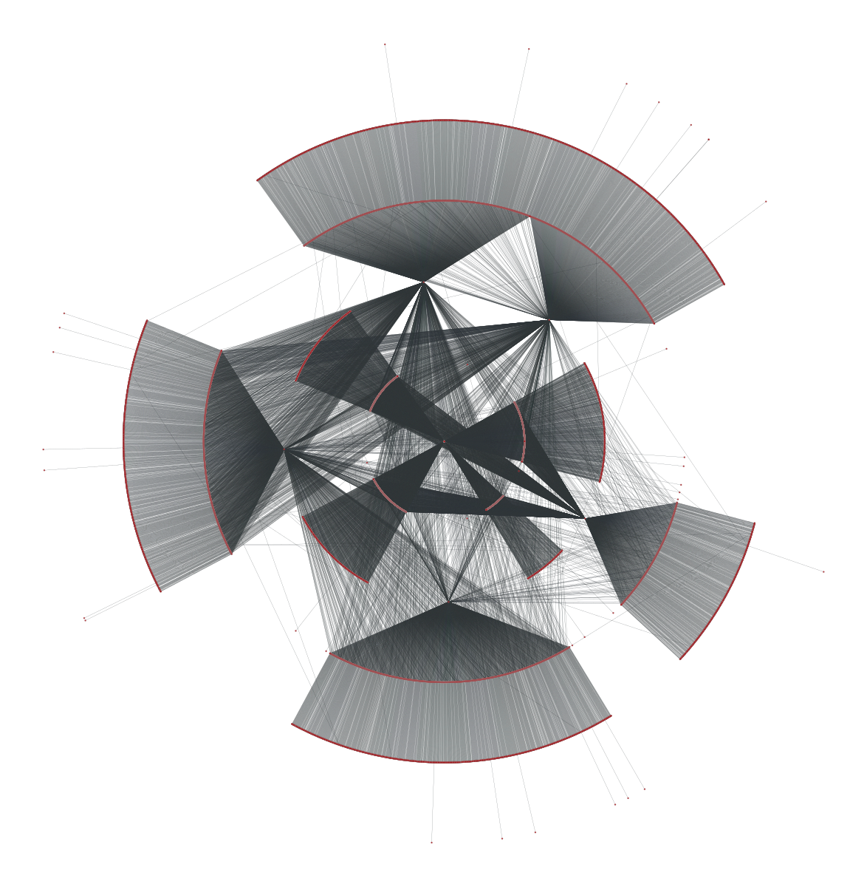
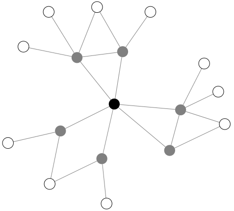
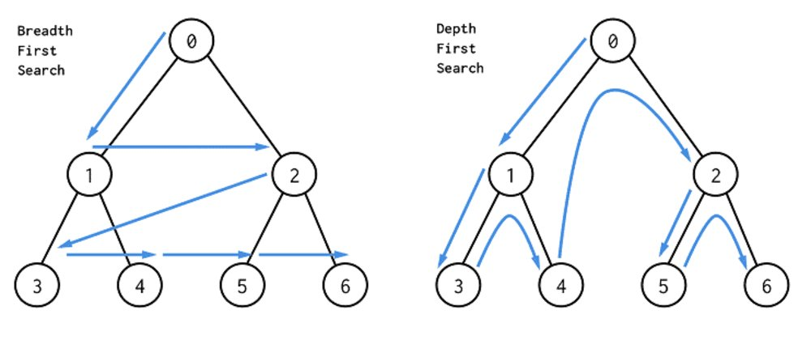
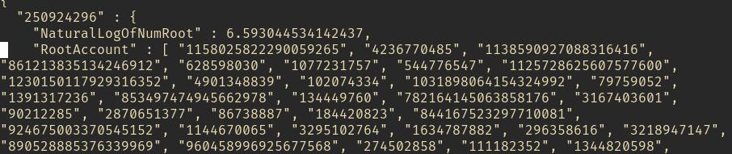

Sony Music Entertainment
ネットワーク分析
Jiyan Jonas Schneider
Table of Contents
データの確認
Data
1次フォロワー

Figure 1: Follower〇〇.json
2次フォロワー

Figure 2: FujiKaze.json
モチーフ分析 (Refresher)
- 3ノードの繋がり方は１３通り存在する

- 三つのノードの間で可能な繋がり方
Significance Profile
注目点
- 分野によって重要性プロファイルが似ている
- それぞれのモチーフの特性を吟味する
Significance Profile

実装の手法例（計画）
- ランダムで作ったネットワークの各モチーフの分布に本ネットワークの分布を比べて需要性プロファイルを作成
- ネットワークにあるモチーフの分布でそのモチーフの重要性を計算数る
- 3-モチーフ、ノードの関係性
- ベースのモデルを選び、それに比べて、モチーフの z-score を算出
- 例えばスケールフリーのネットワークの分布をもつランダムなネットワークをシミュレーション
- シミュレーションだけではなく、典型的なソーシャルネットワークに比べることもできる
- アーティスト同士での significance も計算可能
Z-scoreの算出
\( Z_{i} = \frac{N_{i}^{real} - N_{i}^{rand}}{sd(N_{i}^{rand})} \)
- \( N_{i}^{real} \) (モチーフ \( i \) が実際に起きた回数)
- \( N_{i}^{rand} \) (モチーフ \( i \) がシミュレーションで起きた回数)
ネットワーク構造
ネットワーク構造
| １次フォロワー | ２次フォロワー | |
| Vaundy_engawa | 179028 | 2145 |
| kojikoji__i2 | 36422 | 1873 |
| sakurazaka46 | 1196050 | 3597 |
| ILikeAkairo | 67371 | 2127 |
| FujiiKaze | 319103 | 3011 |
| hinatazaka46 | 750088 | 3181 |
| １次フォロワー | ２次フォロワー | |
| Vaundy_engawa | 2097 | 1963 |
| kojikoji__i2 | 1846 | 1743 |
| sakurazaka46 | 3573 | 2911 |
| ILikeAkairo | 2099 | 1971 |
| FujiiKaze | 2965 | 2807 |
| hinatazaka46 | 3160 | 2625 |

Figure 4: Vaundy_engawa

Figure 5: kojikoji__i2

Figure 6: ILikeAkairo

Figure 7: sakurazaka46

Figure 8: Hinatazaka46

Figure 9: FujiiKaze
Complete graph

モチーフ分析結果

Figure 10: Vaundy_engawa

Figure 11: kojikoji__i2

Figure 12: ILikeAkairo

Figure 13: sakurazaka46

Figure 14: Hinatazaka46

Figure 15: FujiiKaze
All Artists

Figure 16: All Artists
Discussion
!

Data Sampling

Figure 17: Data Traversal (幅優先探索)
Data Question

Figure 18: (nariaki_filtered/5092241.json)
More Ideas
?